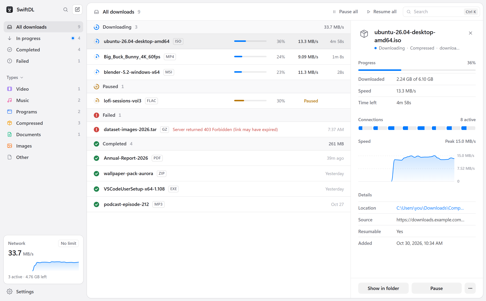
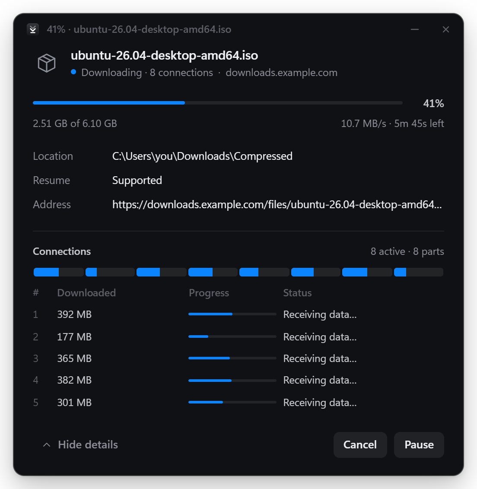

Every download,
at full speed.
The free, open-source download manager for Windows, macOS and Linux.
v0.2.0 · Release notes·MIT licensed


Built for big files and bad connections.
Everything you need from a download manager, without the clutter.
Resume anything
Pause, quit, lose Wi-Fi or crash. Progress is saved every second.
Smart splitting
A connection that finishes early takes half of the biggest part left.
No joining step
Every connection writes straight into the final file.
Video button
Grab the video and audio a page plays, from a button on the player.
Queue and speed limit
Choose how many run at once and cap total bandwidth.
Tidy by default
Files land in Video, Music, Programs, Compressed and Documents.
Command palette
Press Ctrl K to find any download or run any action.
Logins just work
Your browser's cookies come along, so downloads behind a sign-in go through.
Private
No account, analytics or telemetry. Ever.
One file. Many connections.
Servers often cap each connection. SwiftDL opens up to 32 at once, each fetching its own part, and moves work to whichever finishes first.
Check
One tiny request reveals the size and whether parts are allowed.
Split
The file is reserved on disk and divided, one part per connection.
Rebalance
Early finishers take half of the largest part left. Nobody waits.
Save
What's left is saved every second, so resume always works.
Starts from your browser.
Click any download link. SwiftDL opens a small window, and the file arrives faster, with your sign-in intact.

Get SwiftDL
Free and open source · v0.2.0
Questions
Is it really faster?
When the server limits each connection, which many do, yes, by roughly the number of connections. When one connection already fills your internet line, more can't add speed you don't have, but resume and the queue still help.
Can it download from YouTube or Netflix?
Not yet. Those sites stream video in small pieces (HLS or DASH), which needs stream support in the engine. DRM-protected video will never be supported.
Why does Windows or macOS warn me when installing?
The installers aren't code-signed yet. On Windows choose More info, then Run anyway. On macOS, right-click the app and choose Open.
Does SwiftDL collect any data?
No. No accounts, analytics or telemetry. It only connects to the servers you download from.
Is it really free?
Yes. SwiftDL is MIT licensed, and the code is on GitHub.